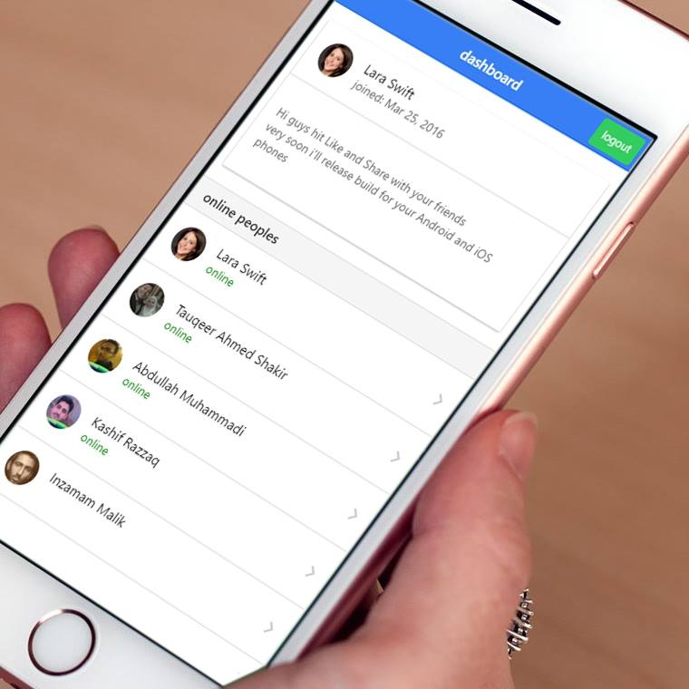

<ion-view view-title="Inzi Chat App">

  <ion-nav-buttons side="primary">

  </ion-nav-buttons>

  <ion-content>

    <br>


    <div align="center" class="">
      <br>
      <p class="lowOpacity">Inzi Chat App is an Awesome Chat App</p>
    </div>
    <br>

    <div class="row padding">

      <button class="button button-positive  col col-33 " ng-click="authWithFacebook()">
        <i class="icon ion-social-facebook"></i>
        Facebook
      </button>

      <button class="button button-calm  col col-33 " ng-click="authWithTwitter()">
        <i class="icon ion-social-twitter"></i>
        Twitter
      </button>

      <button class="button button-assertive col col-33 " ng-click="authWithGoogle()">
        <i class="icon ion-social-google"></i>Google
      </button>
    </div>


  </ion-content>
</ion-view>
